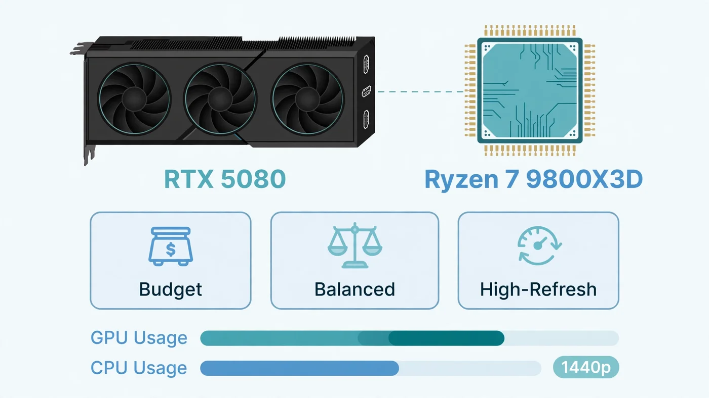

Best CPU for RTX 5080: Balanced Pairing Guide for 1440p and 4K
The best CPU for RTX 5080 is the Ryzen 7 9800X3D for most gamers: an eight-core AM5 chip with 3D V-Cache that keeps the card fed at 1440p high refresh and protects frame-time consistency in CPU-heavy games. If you mainly play at native 4K, the Ryzen 5 9600X is the better-value pick — at 4K the card is the limit, so a cheaper CPU buys the same frames. And if your PC also earns its keep with rendering or video work, the Ryzen 9 9950X3D is the gaming-plus-work pick. This guide explains why each tier is the right answer for a different build, and which CPUs waste money on this card.

Best CPU for RTX 5080: The Short Answer
There is no single best CPU for RTX 5080 builds, because the right chip depends on your resolution, refresh rate and whether the PC does anything besides gaming — but there is a clear default. For a new build aimed at 1440p high refresh, buy the Ryzen 7 9800X3D — a current-generation eight-core AM5 processor with 3D V-Cache that consistently tops the gaming pairings for this card.
Step down to the Ryzen 5 9600X when your monitor is 4K and your games are graphics-heavy: at that resolution the card is the limit, and the cheaper chip buys the same frames. Step up to the Ryzen 9 9950X3D only when heavy rendering, video work or streaming matters as much as gaming, and step sideways to the Ryzen 7 7800X3D when you want X3D gaming performance for less money. Our CPU and GPU pairing guide explains the same balance in general terms.
What the RTX 5080 Actually Needs from a CPU
The RTX 5080 is NVIDIA's second-tier Blackwell flagship: 10,752 CUDA cores, 16GB of GDDR7 memory on a 256-bit bus and DLSS 4 with Multi Frame Generation, according to NVIDIA's official RTX 5080 specifications. It is built as a 1440p high-refresh and 4K card first, and that sets the CPU requirement: a card rendering most frames at 1440p asks the CPU to prepare each frame at a fast pace. It does not need the most expensive processor available, but it does need a modern one.
What "modern" means is specific: enough single-thread speed to prepare frames without stalling the GPU, enough cache to keep game logic fast, and enough cores for the game plus background tasks. A current six-core or eight-core chip clears that bar comfortably; an older four-core chip, or one held back by slow single-channel RAM, does not. Our bottleneck check guide shows how to tell which side is actually limiting you — and our DLSS, FSR and frame generation guide covers how upscaling and frame generation raise the CPU bar.
The Best CPU for RTX 5080 at 1440p
At 1440p, the best CPU for RTX 5080 is the one that never makes the graphics card wait — and the Ryzen 7 9800X3D does that for the least money in the top tier. It is an eight-core, 16-thread AM5 processor with 96 MB of L3 cache, and that cache is the reason it leads: a large cache keeps game data close to the cores, which shows up as steadier frame times and higher 1% lows rather than just a higher average.
The published scaling evidence backs the pick: in TechSpot's CPU and GPU scaling test with an RTX 5080, the 9800X3D measured about a fifth higher average frame rate than a Ryzen 5 7600X at 1080p Medium, with higher 1% lows in demanding scenes — the gap that matters when a game stutters. At 1440p the advantage narrows as the card takes over. Our resolution bottleneck guide explains how the CPU-GPU balance shifts from 1080p to 4K.
Best CPU for RTX 5080 at 4K
At 4K, the best CPU for RTX 5080 is the cheapest modern chip that never gets in the way — and that is the Ryzen 5 9600X. It is a six-core, 12-thread AM5 processor with a 65 W default TDP, so it runs cool on affordable B650 boards and still has the single-thread speed modern games need. At native 4K with high or ultra settings, each frame carries so much pixel work that the RTX 5080 is the limit in nearly every game, so the 9600X's job is simply to stay out of the way — and it does.
The same TechSpot scaling test makes the point clearly: at native 4K Ultra, the 9800X3D showed no measured average advantage over the six-core 7600X with an RTX 5080, because GPU load erased the CPU gap — so paying for the top gaming chip in a 4K-only build buys nothing you can see. The Ryzen 7 9700X is the sensible step up for eight cores on the same AM5 platform when you also stream or multitask. AMD has committed AM5 support through 2029, so a board bought today should accept future AM5 processors with a BIOS update.
Best CPU for RTX 5080 at 1080p High Refresh
At 1080p the balance flips: frames are cheap for the GPU, so the CPU's preparation speed sets the ceiling. On a 240Hz monitor, or in competitive titles where you chase every frame, the Ryzen 7 9800X3D is the safest gaming-first choice — an AM5 Zen 5 X3D part whose extra cache lifts frame rates exactly when the CPU is the limit.
The difference shows up in CPU-heavy games — large-scale multiplayer, simulation and strategy titles, and esports at low settings — where the GPU finishes frames so fast that the processor's speed decides the frame rate. The Ryzen 7 9850X3D is the newer, higher-clocked version of the same chip: a small gaming uplift for a small premium, worth taking when the two cost about the same.
Best Budget CPU for RTX 5080
The best budget CPU for RTX 5080 is not the cheapest chip you can find — it is the cheapest CPU that keeps the build balanced for your resolution. On a new AM5 build, that is the Ryzen 5 9600X itself: going cheaper usually means an older platform or a chip that will hold the card back at 1080p.
If your budget is genuinely tight, there are two honest ways to spend less: the Ryzen 5 7600X on AM5 — older, but still a fast six-core chip that pairs well with the RTX 5080 at 1440p and 4K — or the Ryzen 7 7800X3D, the previous-generation X3D chip that delivers nearly identical gaming performance to the 9800X3D at a lower price. Do not pair the card with a very old or very slow CPU to save money now: a processor that cannot feed the card wastes the money you spent on the graphics card.
Already on AM4? The Ryzen 7 5700X3D Upgrade
If you already own an AM4 board with DDR4 RAM, the Ryzen 7 5700X3D is the clearest value upgrade in this guide. It drops into your existing board — usually after a BIOS update — and its 3D V-Cache gives it gaming performance that holds up well against current mid-range AM5 chips. At 4K, where the RTX 5080 is the limit, it will not hold the card back in any meaningful way: TechSpot's earlier scaling test with the 5800X3D on AM4 placed it only a small margin behind the 9800X3D with an RTX 5080 at 4K.
A 5700X3D costs you one part, while a move to AM5 costs you a CPU, a motherboard and a DDR5 kit. Check your board maker's CPU support list and update the BIOS before swapping the chip in — our motherboard bottleneck guide covers the compatibility checks. Its one honest limit is 1080p high refresh.
Gaming Plus Work: The Ryzen 9 9950X3D
The Ryzen 9 9950X3D is the most complete gaming-and-work option for an RTX 5080: sixteen cores with 128 MB of L3 cache, so it plays games like an X3D chip and renders, compiles and encodes like a workstation chip. In multi-threaded work it is far ahead of the eight-core 9800X3D, which is why it is the pick when the PC earns its keep outside games — but for gaming alone it costs substantially more for little extra performance, because games rarely use sixteen cores. Buy it when your workload actually uses the cores, and buy the 9800X3D when the PC is a gaming machine first.
Intel Options for the RTX 5080
AMD wins the value argument for most RTX 5080 buyers, but Intel has two genuine options: the Core Ultra 7 265K, the mixed-use pick on the LGA 1851 platform with strong multicore performance and QuickSync for encode workflows, and the Core Ultra 9 285K, the flagship Intel option for gaming plus heavy productivity. Either chip needs fast DDR5 to show its best.
If you already own the older LGA 1700 platform, the Core i7-14700K is still a strong partner for this card at 1440p and 4K — our best GPU for i7-14700K guide covers the full range of cards that chip can feed, including the RTX 5080 at 4K.
Platform Costs: The CPU Price Is Not the Whole Price
A CPU decision is a platform decision, and the chip's price tag is only part of it. An AM5 build needs a new board and DDR5 RAM; an AM4 upgrade needs neither; an Intel LGA 1851 build needs its own board and DDR5. Before you compare two CPUs, add up the full platform cost — chip, board, RAM, and a cooler if the chip does not include one.
Cooling and power matter too: a 65 W chip like the 9600X is happy on an affordable air cooler, while higher-power chips need better cooling to hold boost speeds — see our thermal throttling guide. And an RTX 5080 with a 360 W total graphics power needs a quality power supply: NVIDIA recommends an 850 W system unit for this card — see our PSU guide.
RAM: The Supporting Cast
RAM is the supporting part most likely to quietly hold back an RTX 5080 build. Two sticks in dual-channel mode beat one stick of the same total capacity, and RAM running at its rated speed — XMP or EXPO enabled in the BIOS — beats the same kit running at fallback speeds. A fast CPU fed by slow or single-channel RAM still waits on memory, and the symptom looks exactly like a CPU bottleneck. At this tier, 32GB of DDR5 in dual channel is the sensible target — see our single vs dual channel guide and XMP/EXPO guide.
How to Check Your Current CPU Is Keeping Up
If you already own a CPU and are wondering whether it can feed an RTX 5080, do not guess — measure. Play your usual games for a few minutes with an overlay showing GPU usage, per-core CPU usage and frame times, and read the numbers as our bottleneck check guide describes.
- GPU near full, CPU with headroom, FPS rises when you lower resolution: the GPU is the limit. Your CPU is fine.
- CPU near full on one or two cores, GPU usage low, FPS barely changes when you lower resolution: the CPU is the limit — a 5700X3D on AM4, or a move to a 9600X-class AM5 chip, is the fix.
- Stutter with frame-time spikes while usage looks normal: check RAM in dual-channel mode at its rated speed, and check for thermal throttling before blaming the CPU.
- Both usages low and FPS stuck at a round number: a frame cap, VSync or a power limit — not a CPU problem. Our low GPU usage guide covers those checks.
Repeat the same scene after any change: a real fix shows up as higher FPS and steadier frame times.
CPUs to Skip with the RTX 5080
Three categories are worth skipping. First, very old or low-core-count CPUs — four-core chips from several generations ago, and budget chips built for office PCs — will hold the RTX 5080 back even at 1440p. Second, a flagship CPU bought purely for a 4K gaming build: at that resolution the GPU is the limit, so the extra cores and clock speed buy nothing you can see. Third, a CPU upgrade bought on a single percentage from a bottleneck calculator — the estimate is a starting point, not a verdict, as our calculator accuracy guide explains. Measure your own games first.
Free PC Bottleneck Calculator — Estimate CPU and GPU balance for your resolution and workload: check whether your CPU, GPU or VRAM is the slow half of the frame on the PC Bottleneck Calculator (see its methodology page) before you spend money on an RTX 5080 CPU upgrade.
Conclusion
For most gamers the best CPU for RTX 5080 is the Ryzen 7 9800X3D: fast enough to keep the card fed at 1440p high refresh, with the cache that protects frame-time consistency where the CPU sets the ceiling. The Ryzen 5 9600X is the better-value pick when your games live at native 4K, the Ryzen 7 7800X3D is the value X3D alternative, the Ryzen 9 9950X3D covers gaming plus heavy work, and the Ryzen 7 5700X3D is the smartest upgrade if you already own AM4. Match the tier to your resolution and refresh target, price the whole platform, and let your own usage measurements make the final call. If you are pairing the card one tier down instead, our best CPU for RTX 5070 guide covers the 5070.
Frequently Asked Questions
What is the best CPU for the RTX 5080?
For most gamers, the best CPU for the RTX 5080 is the Ryzen 7 9800X3D: an eight-core AM5 chip with 3D V-Cache that keeps the card fed at 1440p high refresh and protects frame-time consistency in CPU-heavy games. If you mainly play at native 4K, the Ryzen 5 9600X is the better-value pick, because at 4K the graphics card is the limit. If your PC also does heavy rendering or video work, the Ryzen 9 9950X3D is the gaming-plus-work pick.
What CPU pairs well with the RTX 5080?
The CPUs that pair well with the RTX 5080 are the Ryzen 7 9800X3D for high-refresh gaming, the Ryzen 7 7800X3D as the value X3D option, the Ryzen 5 9600X for 4K-first builds, the Ryzen 9 9950X3D for gaming plus heavy work, and the Intel Core Ultra 7 265K or Core i7-14700K for mixed use. Which one is best depends on your resolution, refresh rate and whether the PC also does productive work.
Is the Ryzen 7 9800X3D good with the RTX 5080?
Yes — the Ryzen 7 9800X3D is the best gaming pairing for the RTX 5080. Its 96 MB of L3 cache keeps game logic fast and protects 1% lows exactly where the CPU sets the frame-rate ceiling, at 1080p and 1440p high refresh. At native 4K it offers no measured average advantage over a good six-core chip, because the graphics card becomes the limit there — but it never holds the card back at any resolution.
Is the Ryzen 5 9600X enough for an RTX 5080?
Yes, for most builds. The Ryzen 5 9600X is a six-core, 12-thread AM5 processor with a 65 W default TDP, and it is fast enough to keep an RTX 5080 busy at 1440p and 4K, where the GPU is the limit. Its weak spot is 1080p high-refresh gaming in CPU-heavy titles, where a stronger CPU with more cache can raise frame rates — if that is your use case, the Ryzen 7 9800X3D is the better pick.
Will a Core i7-14700K bottleneck an RTX 5080?
No, not at 1440p or 4K, where the GPU is the limiting factor in almost every game. The Core i7-14700K has more than enough single-thread speed and cores to keep an RTX 5080 fed at those resolutions. At 1080p with a high-refresh monitor it can become the limit in competitive titles pushing very high frame rates, because the card finishes each frame so quickly that the processor has to prepare the next one in just a few milliseconds. That is a resolution problem, not a bad pairing.
Sources
Official documentation referenced in this guide:
- NVIDIA: GeForce RTX 5080 (Blackwell architecture, 10,752 CUDA cores, 16GB GDDR7, DLSS 4 with Multi Frame Generation, 360 W total graphics power, 850 W recommended system power)
- AMD: Ryzen 7 9800X3D (AM5 Zen 5 X3D processor with 3D V-Cache, PCIe 5.0 and DDR5 support)
- AMD: Ryzen 5 9600X (AM5 processor, 6 cores / 12 threads, 65 W default TDP)
- AMD: Ryzen 9 9950X3D (AM5 processor, 16 cores with 3D V-Cache)
- AMD: Ryzen 7 7800X3D (AM5 processor with 3D V-Cache)